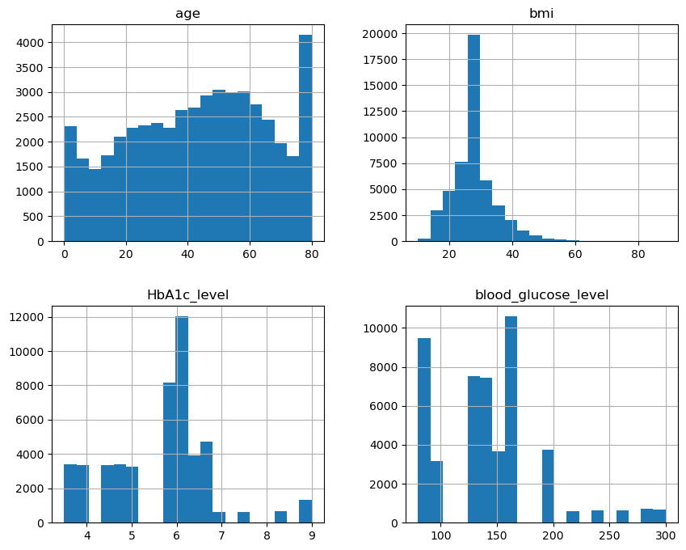
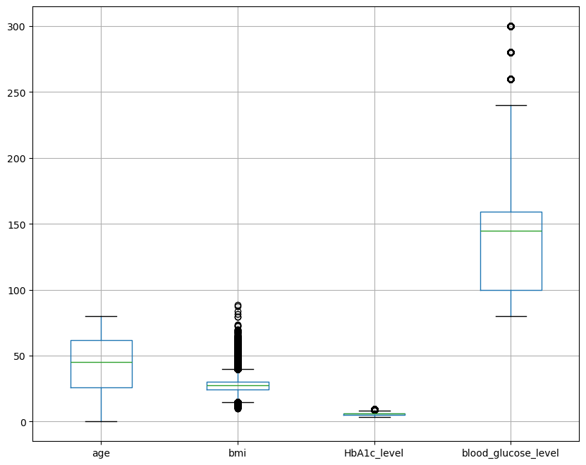
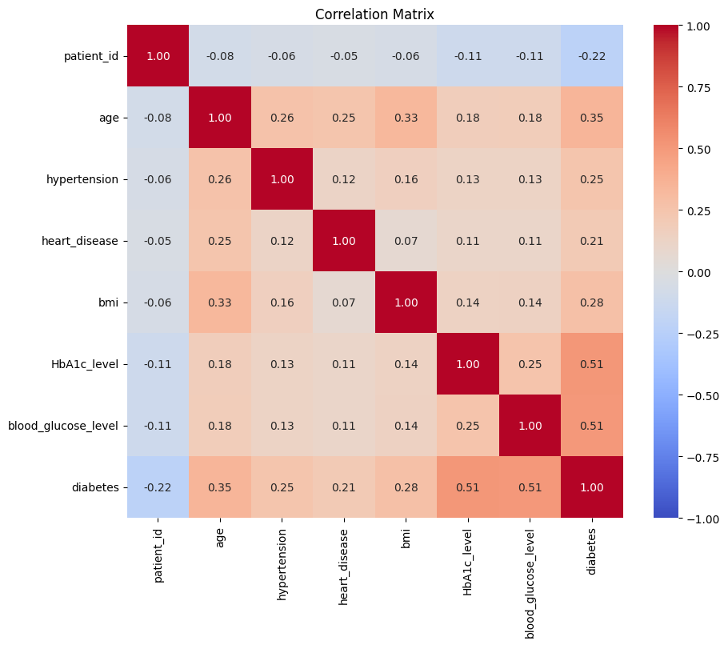
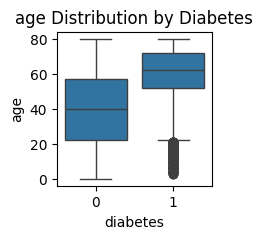
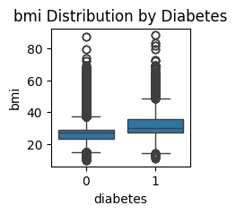
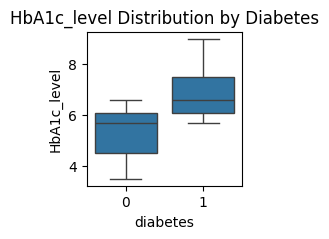
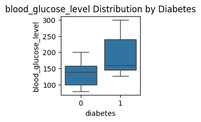
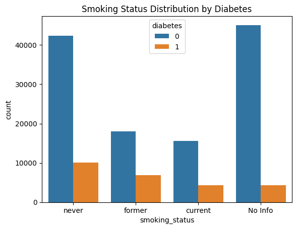
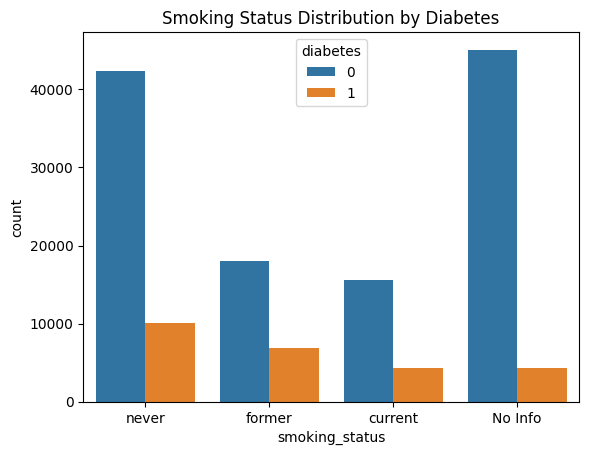

import numpy as np
import pandas as pd
import sqlite3
data = pd.read_csv("raw_data.csv")
data.describe
<bound method NDFrame.describe of gender age hypertension heart_disease smoking_history bmi \
0 Female 44.0 0 0 never 19.31
1 Male 67.0 0 1 not current 27.32
2 Male 50.0 1 0 current 27.32
3 Male 73.0 0 0 former 25.91
4 Female 53.0 0 0 former 27.32
... ... ... ... ... ... ...
48846 Male 29.0 0 0 never 23.98
48847 Female 12.0 0 0 No Info 27.32
48848 Male 51.0 0 0 never 25.16
48849 Female 29.0 0 0 never 24.11
48850 Male 51.0 1 0 ever 27.32
HbA1c_level blood_glucose_level diabetes
0 6.5 200 1
1 6.5 200 1
2 5.7 260 1
3 9.0 160 1
4 7.0 159 1
... ... ... ...
48846 6.5 90 0
48847 6.2 130 0
48848 4.8 158 0
48849 5.7 159 0
48850 5.7 200 0
[48851 rows x 9 columns]>
import matplotlib.pyplot as plt
data[['age', 'bmi', 'HbA1c_level', 'blood_glucose_level']].hist(figsize=(10, 8), bins=20)
plt.show()
data[['age', 'bmi', 'HbA1c_level', 'blood_glucose_level']].boxplot(figsize=(10, 8))
plt.show()


print(data['gender'].value_counts())
print(data['smoking_history'].value_counts())
gender
Female 28465
Male 20376
Other 10
Name: count, dtype: int64
smoking_history
never 17459
No Info 16489
former 5079
current 4612
not current 3194
ever 2018
Name: count, dtype: int64
data['gender'] = data['gender'].replace({'Other': 'Female'})
data['smoking_history'] = data['smoking_history'].replace({
'not current': 'former',
'ever': 'current'
})
data['smoking_history'] = data['smoking_history'].replace({'No Info': 'unknown'})
print(data['diabetes'].value_counts(normalize=True))
diabetes
0 0.826002
1 0.173998
Name: proportion, dtype: float64
print(data[data['bmi'] > 50])
print(data[data['HbA1c_level'] > 8])
print(data[data['blood_glucose_level'] > 200])
gender age hypertension heart_disease smoking_history bmi \
6 Female 67.0 0 0 never 63.48
29 Female 52.0 1 0 never 50.30
47 Male 43.0 0 0 never 69.37
54 Female 59.0 0 1 never 60.26
101 Male 30.0 1 0 former 57.17
... ... ... ... ... ... ...
48143 Female 33.0 0 0 never 50.76
48185 Male 56.0 1 0 never 54.45
48318 Female 29.0 0 0 former 53.07
48476 Female 45.0 1 0 current 61.33
48728 Male 29.0 0 0 never 50.36
HbA1c_level blood_glucose_level diabetes
6 8.8 155 1
29 6.6 155 1
47 7.5 130 1
54 8.8 145 1
101 5.8 300 1
... ... ... ...
48143 6.5 100 0
48185 4.0 145 0
48318 5.7 126 0
48476 5.8 158 0
48728 3.5 155 0
[488 rows x 9 columns]
gender age hypertension heart_disease smoking_history bmi \
3 Male 73.0 0 0 former 25.91
5 Male 50.0 0 0 former 37.16
6 Female 67.0 0 0 never 63.48
7 Male 57.0 0 0 unknown 27.32
13 Male 80.0 0 0 never 22.06
... ... ... ... ... ... ...
8482 Male 80.0 0 1 never 25.76
8486 Female 80.0 0 0 never 22.04
8493 Female 74.0 0 0 current 29.51
8494 Female 37.0 0 0 unknown 36.87
8495 Female 65.0 1 1 never 33.55
HbA1c_level blood_glucose_level diabetes
3 9.0 160 1
5 9.0 159 1
6 8.8 155 1
7 8.2 126 1
13 9.0 155 1
... ... ... ...
8482 9.0 220 1
8486 8.2 130 1
8493 8.2 130 1
8494 8.8 160 1
8495 8.2 140 1
[1976 rows x 9 columns]
gender age hypertension heart_disease smoking_history bmi \
2 Male 50.0 1 0 current 27.32
8 Female 36.0 0 0 current 32.27
9 Female 60.0 0 0 never 27.32
11 Female 80.0 1 0 never 27.32
12 Female 77.0 0 0 never 31.70
... ... ... ... ... ... ...
8491 Male 64.0 1 0 former 33.12
8492 Male 67.0 0 0 current 27.32
8496 Male 55.0 0 1 former 30.42
8497 Female 61.0 0 0 unknown 34.45
8499 Female 61.0 0 0 current 30.11
HbA1c_level blood_glucose_level diabetes
2 5.7 260 1
8 6.2 220 1
9 7.5 300 1
11 6.8 280 1
12 6.5 280 1
... ... ... ...
8491 5.7 300 1
8492 6.8 220 1
8496 6.2 300 1
8497 6.5 280 1
8499 6.2 240 1
[3277 rows x 9 columns]
conn = sqlite3.connect('diabetes_project.db')
cursor = conn.cursor()
cursor.execute("""
CREATE TABLE IF NOT EXISTS gender (
gender_id INTEGER PRIMARY KEY AUTOINCREMENT,
gender_name TEXT UNIQUE
)
""")
cursor.execute("""
CREATE TABLE IF NOT EXISTS smoking (
smoking_id INTEGER PRIMARY KEY AUTOINCREMENT,
smoking_status TEXT UNIQUE
)
""")
cursor.execute("""
CREATE TABLE IF NOT EXISTS patient_data (
patient_id INTEGER PRIMARY KEY AUTOINCREMENT,
gender_id INTEGER,
age FLOAT,
hypertension INTEGER,
heart_disease INTEGER,
smoking_id INTEGER,
bmi FLOAT,
HbA1c_level FLOAT,
blood_glucose_level INTEGER,
diabetes INTEGER,
FOREIGN KEY (gender_id) REFERENCES gender(gender_id),
FOREIGN KEY (smoking_id) REFERENCES smoking(smoking_id)
)
""")
cursor.executemany("""INSERT OR IGNORE INTO gender (gender_name) VALUES (?) """, [('Male',), ('Female',), ('Other',)])
cursor.executemany(""" INSERT OR IGNORE INTO smoking (smoking_status) VALUES (?) """, [('never',), ('current',), ('former',), ('No Info',), ('not current',), ('ever',)])
conn.commit()
gender_mapping = {row[1]: row[0] for row in cursor.execute("SELECT gender_id, gender_name FROM gender").fetchall()}
smoking_mapping = {row[1]: row[0] for row in cursor.execute("SELECT smoking_id, smoking_status FROM smoking").fetchall()}
data['gender_id'] = data['gender'].map(gender_mapping)
data['smoking_id'] = data['smoking_history'].map(smoking_mapping)
normalized_data = data[['gender_id', 'age', 'hypertension', 'heart_disease', 'smoking_id', 'bmi', 'HbA1c_level', 'blood_glucose_level', 'diabetes']]
normalized_data.to_sql('patient_data', conn, if_exists='append', index=False)
print("Gender Table:")
print(pd.read_sql_query("SELECT * FROM gender", conn))
print("\nSmoking Table:")
print(pd.read_sql_query("SELECT * FROM smoking", conn))
print("\nPatient Data Table (First 10 Rows):")
print(pd.read_sql_query("SELECT * FROM patient_data LIMIT 10", conn))
conn.close()
Gender Table:
gender_id gender_name
0 1 Male
1 2 Female
2 3 Other
Smoking Table:
smoking_id smoking_status
0 1 never
1 2 current
2 3 former
3 4 No Info
4 5 not current
5 6 ever
Patient Data Table (First 10 Rows):
patient_id gender_id age hypertension heart_disease smoking_id \
0 1 2 44.0 0 0 1
1 2 1 67.0 0 1 3
2 3 1 50.0 1 0 2
3 4 1 73.0 0 0 3
4 5 2 53.0 0 0 3
5 6 1 50.0 0 0 3
6 7 2 67.0 0 0 1
7 8 1 57.0 0 0 4
8 9 2 36.0 0 0 2
9 10 2 60.0 0 0 1
bmi HbA1c_level blood_glucose_level diabetes
0 19.31 6.5 200 1
1 27.32 6.5 200 1
2 27.32 5.7 260 1
3 25.91 9.0 160 1
4 27.32 7.0 159 1
5 37.16 9.0 159 1
6 63.48 8.8 155 1
7 27.32 8.2 126 1
8 32.27 6.2 220 1
9 27.32 7.5 300 1
conn = sqlite3.connect('diabetes_project.db')
cursor = conn.cursor()
cursor.execute("""
UPDATE patient_data
SET smoking_id = 4
WHERE smoking_id IS NULL
""")
conn.commit()
query = """
SELECT
pd.patient_id, g.gender_name, pd.age, pd.hypertension, pd.heart_disease,
s.smoking_status, pd.bmi, pd.HbA1c_level, pd.blood_glucose_level, pd.diabetes
FROM patient_data pd
LEFT JOIN gender g ON pd.gender_id = g.gender_id
LEFT JOIN smoking s ON pd.smoking_id = s.smoking_id
"""
joined_data = pd.read_sql_query(query, conn)
print(joined_data.head())
patient_id gender_name age hypertension heart_disease smoking_status \
0 1 Female 44.0 0 0 never
1 2 Male 67.0 0 1 former
2 3 Male 50.0 1 0 current
3 4 Male 73.0 0 0 former
4 5 Female 53.0 0 0 former
bmi HbA1c_level blood_glucose_level diabetes
0 19.31 6.5 200 1
1 27.32 6.5 200 1
2 27.32 5.7 260 1
3 25.91 9.0 160 1
4 27.32 7.0 159 1
from sklearn.model_selection import train_test_split
X = joined_data.drop(columns=['diabetes'])
y = joined_data['diabetes']
X_train, X_test, y_train, y_test = train_test_split(
X, y, test_size=0.2, stratify=y, random_state=42
)
print("Train set class distribution:")
print(y_train.value_counts(normalize=True))
print("\nTest set class distribution:")
print(y_test.value_counts(normalize=True))
Train set class distribution:
diabetes
0 0.826001
1 0.173999
Name: proportion, dtype: float64
Test set class distribution:
diabetes
0 0.826002
1 0.173998
Name: proportion, dtype: float64
from ydata_profiling import ProfileReport
profile = ProfileReport(data, title="Diabetes Profiling Report", explorative=True)
profile
---------------------------------------------------------------------------
ModuleNotFoundError Traceback (most recent call last)
Cell In[16], line 1
----> 1 from ydata_profiling import ProfileReport
3 profile = ProfileReport(data, title="Diabetes Profiling Report", explorative=True)
4 profile
ModuleNotFoundError: No module named 'ydata_profiling'
numeric_data = joined_data.select_dtypes(include=['number'])
corr_matrix = numeric_data.corr()
import seaborn as sns
import matplotlib.pyplot as plt
plt.figure(figsize=(10, 8))
sns.heatmap(corr_matrix, annot=True, fmt=".2f", cmap="coolwarm", vmin=-1, vmax=1)
plt.title("Correlation Matrix")
plt.show()

features = ['age', 'bmi', 'HbA1c_level', 'blood_glucose_level']
for feature in features:
plt.figure(figsize=(2, 2))
sns.boxplot(x=joined_data['diabetes'], y=joined_data[feature])
plt.title(f"{feature} Distribution by Diabetes")
plt.show()




sns.countplot(x='gender_name', hue='diabetes', data=joined_data)
plt.title("Gender Distribution by Diabetes")
plt.show()
sns.countplot(x='smoking_status', hue='diabetes', data=joined_data)
plt.title("Smoking Status Distribution by Diabetes")
plt.show()
 

data['bmi'] = data['bmi'].apply(lambda x: 50 if x > 50 else x)
joined_data['smoking_status'] = joined_data['smoking_status'].replace("No Info", "unknown")
from sklearn.preprocessing import StandardScaler
features_to_scale = ['bmi', 'HbA1c_level', 'blood_glucose_level']
scaler = StandardScaler()
joined_data[features_to_scale] = scaler.fit_transform(joined_data[features_to_scale])
from sklearn.preprocessing import LabelEncoder
label_encoder = LabelEncoder()
joined_data['gender_encoded'] = label_encoder.fit_transform(joined_data['gender_name'])
joined_data['smoking_encoded'] = label_encoder.fit_transform(joined_data['smoking_status'])
joined_data = pd.get_dummies(joined_data, columns=['gender_name', 'smoking_status'], drop_first=True)
print(joined_data.head())
patient_id age hypertension heart_disease bmi HbA1c_level \
0 1 44.0 0 0 -1.231983 0.730609
1 2 67.0 0 1 -0.067159 0.730609
2 3 50.0 1 0 -0.067159 0.035766
3 4 73.0 0 0 -0.272203 2.901994
4 5 53.0 0 0 -0.067159 1.164886
blood_glucose_level diabetes gender_encoded smoking_encoded \
0 1.231670 1 0 2
1 1.231670 1 1 1
2 2.534607 1 1 0
3 0.363046 1 1 1
4 0.341330 1 0 1
gender_name_Male smoking_status_former smoking_status_never \
0 False False True
1 True True False
2 True False False
3 True True False
4 False True False
smoking_status_unknown
0 False
1 False
2 False
3 False
4 False
print((joined_data[ ['age','hypertension', 'heart_disease', 'bmi', 'HbA1c_level', 'blood_glucose_level' ]] < 0).sum())
age 0
hypertension 0
heart_disease 0
bmi 95583
HbA1c_level 50328
blood_glucose_level 71514
dtype: int64
for col in ['bmi', 'HbA1c_level', 'blood_glucose_level']:
joined_data[col] = joined_data[col].apply(lambda x: np.nan if x < 0 else x)
print((joined_data[ ['age','hypertension', 'heart_disease', 'bmi', 'HbA1c_level', 'blood_glucose_level' ]] < 0).sum())
age 0
hypertension 0
heart_disease 0
bmi 0
HbA1c_level 0
blood_glucose_level 0
dtype: int64
df=joined_data
import mlflow
mlflow.set_tracking_uri("https://dagshub.com/shashankmankala/diabetesprediction.mlflow")
import os
os.environ['MLFLOW_TRACKING_URI'] = "https://dagshub.com/shashankmankala/diabetesprediction.mlflow"
os.environ['MLFLOW_TRACKING_USERNAME'] = "shashankmankala"
os.environ['MLFLOW_TRACKING_PASSWORD'] = "5af9c880a10d0d8a5c242e3b5709945f574da092"
Experiments Preprocessing#
from sklearn.pipeline import Pipeline
from sklearn.compose import ColumnTransformer
from sklearn.preprocessing import StandardScaler, OneHotEncoder, FunctionTransformer
from sklearn.impute import SimpleImputer
from sklearn.linear_model import LogisticRegression
from sklearn.model_selection import GridSearchCV, StratifiedKFold
from sklearn.metrics import f1_score, confusion_matrix
import mlflow
import pandas as pd
import numpy as np
from sklearn.preprocessing import StandardScaler, OneHotEncoder
from sklearn.linear_model import LogisticRegression, RidgeClassifier
from sklearn.ensemble import RandomForestClassifier
from sklearn.experimental import enable_hist_gradient_boosting
from sklearn.ensemble import HistGradientBoostingClassifier
from xgboost import XGBClassifier
from sklearn.model_selection import StratifiedKFold, train_test_split, cross_val_score
from sklearn.base import BaseEstimator, ClassifierMixin
from sklearn.feature_selection import VarianceThreshold
from sklearn.model_selection import StratifiedKFold, cross_val_score, train_test_split
from tqdm import tqdm
from sklearn.decomposition import PCA
from sklearn.model_selection import StratifiedKFold, cross_val_score
import matplotlib.pyplot as plt
from imblearn.over_sampling import SMOTE
from sklearn.ensemble import StackingClassifier, RandomForestClassifier, GradientBoostingClassifier
from sklearn.model_selection import train_test_split
from sklearn.preprocessing import OneHotEncoder, StandardScaler
import joblib
X = df.drop(columns=['diabetes'])
y = df['diabetes']
X_train, X_test, y_train, y_test = train_test_split(X, y, test_size=0.2, stratify=y, random_state=42)
print("Columns in X:", X.columns)
numeric_features = ['age','hypertension', 'heart_disease', 'bmi', 'HbA1c_level', 'blood_glucose_level' ]
categorical_features = ['gender_encoded', 'smoking_encoded', 'gender_name_Male', 'smoking_status_former', 'smoking_status_never', 'smoking_status_unknown']
numeric_transformer = Pipeline(steps=[
('imputer', SimpleImputer(strategy='mean')),
('scaler', StandardScaler())
])
categorical_transformer = Pipeline(steps=[
('imputer', SimpleImputer(strategy='most_frequent')),
('onehot', OneHotEncoder(handle_unknown='ignore'))
])
preprocessor = ColumnTransformer(
transformers=[
('num', numeric_transformer, numeric_features),
('cat', categorical_transformer, categorical_features)
]
)
logreg_model = LogisticRegression(max_iter=1000, random_state=42)
pipeline = Pipeline([
('preprocessor', preprocessor),
('model', logreg_model)
])
cv = StratifiedKFold(n_splits=3, shuffle=True, random_state=42)
C:\Users\Mankala Shashank\AppData\Local\Programs\Python\Python310\lib\site-packages\sklearn\experimental\enable_hist_gradient_boosting.py:19: UserWarning: Since version 1.0, it is not needed to import enable_hist_gradient_boosting anymore. HistGradientBoostingClassifier and HistGradientBoostingRegressor are now stable and can be normally imported from sklearn.ensemble.
warnings.warn(
Columns in X: Index(['patient_id', 'age', 'hypertension', 'heart_disease', 'bmi',
'HbA1c_level', 'blood_glucose_level', 'gender_encoded',
'smoking_encoded', 'gender_name_Male', 'smoking_status_former',
'smoking_status_never', 'smoking_status_unknown'],
dtype='object')
Experiment 1#
class LogTransformer:
def fit(self, X, y=None):
return self
def transform(self, X):
return np.log1p(X)
def get_feature_names_out(self, input_features=None):
return input_features
missing_numeric = set(numeric_features) - set(X.columns)
missing_categorical = set(categorical_features) - set(X.columns)
if missing_numeric or missing_categorical:
raise KeyError(f"Missing Columns - Numeric: {missing_numeric}, Categorical: {missing_categorical}")
param_grid = {
'model__C': [0.1, 1, 10],
'model__penalty': ['l1', 'l2'],
'model__solver': ['liblinear']
}
grid_search = GridSearchCV(estimator=pipeline, param_grid=param_grid, scoring='f1', cv=cv, verbose=1, n_jobs=-1 )
print("Starting Grid Search...")
grid_search.fit(X_train, y_train)
best_model = grid_search.best_estimator_
best_params = grid_search.best_params_
best_f1_score = grid_search.best_score_
y_pred_test = best_model.predict(X_test)
test_f1_score = f1_score(y_test, y_pred_test)
conf_matrix = confusion_matrix(y_test, y_pred_test)
print(f"Confusion Matrix:\n{conf_matrix}")
print(f"F1-Score (Training Data): {test_f1_score:.4f}")
conf_matrix_df = pd.DataFrame(conf_matrix, index=['True Negative', 'True Positive'], columns=['Predicted Negative', 'Predicted Positive'])
conf_matrix_csv_path = "data/confusion_matrix.csv"
conf_matrix_df.to_csv(conf_matrix_csv_path, index=True)
mlflow.set_experiment("Classification Experiment #1")
with mlflow.start_run(run_name="Logistic Regression - Experiment 1 with Log Transform"):
mlflow.log_param("best_params", best_params)
mlflow.log_metric("best_f1_score", best_f1_score)
mlflow.log_metric("train_f1_score", test_f1_score)
mlflow.log_artifact(conf_matrix_csv_path)
mlflow.sklearn.log_model(grid_search.best_estimator_, "LogisticRegression_model")
Starting Grid Search...
Fitting 3 folds for each of 6 candidates, totalling 18 fits
Confusion Matrix:
[[23853 358]
[ 2012 3088]]
F1-Score (Training Data): 0.7227
2024/12/21 13:25:18 WARNING mlflow.models.model: Model logged without a signature and input example. Please set `input_example` parameter when logging the model to auto infer the model signature.
🏃 View run Logistic Regression - Experiment 1 with Log Transform at: https://dagshub.com/shashankmankala/diabetesprediction.mlflow/#/experiments/0/runs/28cb83e2d4734f3a8d814065140e25d9
🧪 View experiment at: https://dagshub.com/shashankmankala/diabetesprediction.mlflow/#/experiments/0
Experiment 2#
class SklearnXGBWrapper(BaseEstimator, ClassifierMixin):
def __init__(self, **kwargs):
self.model = XGBClassifier(use_label_encoder=False, eval_metric="logloss", **kwargs)
def fit(self, X, y, **kwargs):
self.model.fit(X, y, **kwargs)
return self
def predict(self, X):
return self.model.predict(X)
def predict_proba(self, X):
return self.model.predict_proba(X)
classifiers = {
"LogisticRegression": LogisticRegression(max_iter=1000, random_state=42),
"RidgeClassifier": RidgeClassifier(random_state=42),
"RandomForest": RandomForestClassifier(n_estimators=50, max_depth=10, random_state=42, n_jobs=-1),
"XGBClassifier": SklearnXGBWrapper(max_depth=6, learning_rate=0.1, n_estimators=100, random_state=42)
}
mlflow.set_experiment("Classification Experiment #2")
results = []
for name, model in classifiers.items():
print(f"Evaluating {name}...")
try:
pipeline = Pipeline([
('preprocessor', preprocessor),
('model', model)
])
f1_scores = cross_val_score(pipeline, X_train, y_train, cv=cv, scoring='f1')
pipeline.fit(X_train, y_train)
y_pred_test = pipeline.predict(X_test)
test_f1_score = f1_score(y_test, y_pred_test)
conf_matrix = confusion_matrix(y_test, y_pred_test)
with mlflow.start_run(run_name=name):
mlflow.log_param("model", name)
mlflow.log_metric("cv_mean_f1_score", f1_scores.mean())
mlflow.log_metric("cv_std_f1_score", f1_scores.std())
mlflow.log_metric("test_f1_score", test_f1_score)
conf_matrix_df = pd.DataFrame(conf_matrix, index=['True Negative', 'True Positive'], columns=['Predicted Negative', 'Predicted Positive'])
conf_matrix_csv_path = f"data/{name}_confusion_matrix.csv"
conf_matrix_df.to_csv(conf_matrix_csv_path, index=True)
mlflow.log_artifact(conf_matrix_csv_path)
mlflow.sklearn.log_model(pipeline, f"{name}_model")
results.append({
"Model": name,
"CV Mean F1-Score": f1_scores.mean(),
"CV Std Dev": f1_scores.std(),
"Test F1-Score": test_f1_score
})
print(f"{name} - CV Mean F1-Score: {f1_scores.mean():.4f}, CV Std Dev: {f1_scores.std():.4f}, Test F1-Score: {test_f1_score:.4f}")
except Exception as e:
print(f"Error with {name}: {e}")
results_df = pd.DataFrame(results)
print("\nFinal Results:")
print(results_df)
with mlflow.start_run(run_name="Experiment #2 Summary"):
for _, row in results_df.iterrows():
mlflow.log_metric(f"{row['Model']}_cv_mean_f1", row['CV Mean F1-Score'])
mlflow.log_metric(f"{row['Model']}_cv_std_f1", row['CV Std Dev'])
mlflow.log_metric(f"{row['Model']}_test_f1", row['Test F1-Score'])
Evaluating LogisticRegression...
2024/12/21 13:25:35 WARNING mlflow.models.model: Model logged without a signature and input example. Please set `input_example` parameter when logging the model to auto infer the model signature.
🏃 View run LogisticRegression at: https://dagshub.com/shashankmankala/diabetesprediction.mlflow/#/experiments/2/runs/710d44b14bd34ac8a9a484c4053c94ad
🧪 View experiment at: https://dagshub.com/shashankmankala/diabetesprediction.mlflow/#/experiments/2
LogisticRegression - CV Mean F1-Score: 0.7180, CV Std Dev: 0.0016, Test F1-Score: 0.7225
Evaluating RidgeClassifier...
2024/12/21 13:25:45 WARNING mlflow.models.model: Model logged without a signature and input example. Please set `input_example` parameter when logging the model to auto infer the model signature.
🏃 View run RidgeClassifier at: https://dagshub.com/shashankmankala/diabetesprediction.mlflow/#/experiments/2/runs/256d0a9a78db431eb9e9db7642e979c3
🧪 View experiment at: https://dagshub.com/shashankmankala/diabetesprediction.mlflow/#/experiments/2
RidgeClassifier - CV Mean F1-Score: 0.6730, CV Std Dev: 0.0021, Test F1-Score: 0.6808
Evaluating RandomForest...
2024/12/21 13:26:01 WARNING mlflow.models.model: Model logged without a signature and input example. Please set `input_example` parameter when logging the model to auto infer the model signature.
🏃 View run RandomForest at: https://dagshub.com/shashankmankala/diabetesprediction.mlflow/#/experiments/2/runs/00cd591c7c4c4a8e9da392856b10739b
🧪 View experiment at: https://dagshub.com/shashankmankala/diabetesprediction.mlflow/#/experiments/2
RandomForest - CV Mean F1-Score: 0.8123, CV Std Dev: 0.0024, Test F1-Score: 0.8205
Evaluating XGBClassifier...
C:\Users\Mankala Shashank\AppData\Local\Programs\Python\Python310\lib\site-packages\xgboost\core.py:158: UserWarning: [13:26:04] WARNING: C:\buildkite-agent\builds\buildkite-windows-cpu-autoscaling-group-i-0c55ff5f71b100e98-1\xgboost\xgboost-ci-windows\src\learner.cc:740:
Parameters: { "use_label_encoder" } are not used.
warnings.warn(smsg, UserWarning)
C:\Users\Mankala Shashank\AppData\Local\Programs\Python\Python310\lib\site-packages\sklearn\pipeline.py:62: FutureWarning: This Pipeline instance is not fitted yet. Call 'fit' with appropriate arguments before using other methods such as transform, predict, etc. This will raise an error in 1.8 instead of the current warning.
warnings.warn(
C:\Users\Mankala Shashank\AppData\Local\Programs\Python\Python310\lib\site-packages\xgboost\core.py:158: UserWarning: [13:26:05] WARNING: C:\buildkite-agent\builds\buildkite-windows-cpu-autoscaling-group-i-0c55ff5f71b100e98-1\xgboost\xgboost-ci-windows\src\learner.cc:740:
Parameters: { "use_label_encoder" } are not used.
warnings.warn(smsg, UserWarning)
C:\Users\Mankala Shashank\AppData\Local\Programs\Python\Python310\lib\site-packages\sklearn\pipeline.py:62: FutureWarning: This Pipeline instance is not fitted yet. Call 'fit' with appropriate arguments before using other methods such as transform, predict, etc. This will raise an error in 1.8 instead of the current warning.
warnings.warn(
C:\Users\Mankala Shashank\AppData\Local\Programs\Python\Python310\lib\site-packages\xgboost\core.py:158: UserWarning: [13:26:06] WARNING: C:\buildkite-agent\builds\buildkite-windows-cpu-autoscaling-group-i-0c55ff5f71b100e98-1\xgboost\xgboost-ci-windows\src\learner.cc:740:
Parameters: { "use_label_encoder" } are not used.
warnings.warn(smsg, UserWarning)
C:\Users\Mankala Shashank\AppData\Local\Programs\Python\Python310\lib\site-packages\sklearn\pipeline.py:62: FutureWarning: This Pipeline instance is not fitted yet. Call 'fit' with appropriate arguments before using other methods such as transform, predict, etc. This will raise an error in 1.8 instead of the current warning.
warnings.warn(
C:\Users\Mankala Shashank\AppData\Local\Programs\Python\Python310\lib\site-packages\xgboost\core.py:158: UserWarning: [13:26:06] WARNING: C:\buildkite-agent\builds\buildkite-windows-cpu-autoscaling-group-i-0c55ff5f71b100e98-1\xgboost\xgboost-ci-windows\src\learner.cc:740:
Parameters: { "use_label_encoder" } are not used.
warnings.warn(smsg, UserWarning)
C:\Users\Mankala Shashank\AppData\Local\Programs\Python\Python310\lib\site-packages\sklearn\pipeline.py:62: FutureWarning: This Pipeline instance is not fitted yet. Call 'fit' with appropriate arguments before using other methods such as transform, predict, etc. This will raise an error in 1.8 instead of the current warning.
warnings.warn(
2024/12/21 13:26:15 WARNING mlflow.models.model: Model logged without a signature and input example. Please set `input_example` parameter when logging the model to auto infer the model signature.
🏃 View run XGBClassifier at: https://dagshub.com/shashankmankala/diabetesprediction.mlflow/#/experiments/2/runs/cb742f0dc1f840cf989a2df55ae6bbab
🧪 View experiment at: https://dagshub.com/shashankmankala/diabetesprediction.mlflow/#/experiments/2
XGBClassifier - CV Mean F1-Score: 0.8508, CV Std Dev: 0.0021, Test F1-Score: 0.8329
Final Results:
Model CV Mean F1-Score CV Std Dev Test F1-Score
0 LogisticRegression 0.718011 0.001557 0.722508
1 RidgeClassifier 0.673005 0.002116 0.680846
2 RandomForest 0.812318 0.002426 0.820525
3 XGBClassifier 0.850832 0.002057 0.832945
🏃 View run Experiment #2 Summary at: https://dagshub.com/shashankmankala/diabetesprediction.mlflow/#/experiments/2/runs/4c8b551420c248f38c6427cedb321a44
🧪 View experiment at: https://dagshub.com/shashankmankala/diabetesprediction.mlflow/#/experiments/2
Experiment 3#
df['bmi_category'] = pd.cut(df['bmi'], bins=[0, 18.5, 24.9, 29.9, 100], labels=['Underweight', 'Normal', 'Overweight', 'Obese'])
df['age_group'] = pd.cut(df['age'], bins=[0, 18, 35, 50, 65, 100], labels=['Child', 'Young Adult', 'Middle Aged', 'Senior', 'Elder'])
df['risk_score'] = df['hypertension'] + df['heart_disease'] + (df['smoking_encoded'] == 2).astype(int)
f1_scores = cross_val_score(pipeline, X_train, y_train, cv=cv, scoring='f1', verbose=2)
pipeline.fit(X_train, y_train)
y_pred_test = pipeline.predict(X_test)
test_f1_score = f1_score(y_test, y_pred_test)
conf_matrix = confusion_matrix(y_test, y_pred_test)
print("Cross-Val F1-Scores:", f1_scores)
print("Mean F1-Score (CV):", np.mean(f1_scores))
print("F1-Score (Test Data):", test_f1_score)
print("Confusion Matrix (Test Data):\n", conf_matrix)
mlflow.set_experiment("Classification Experiment #3")
with mlflow.start_run(run_name="Feature Engineering - Experiment 3"):
mlflow.log_param("numeric_features", numeric_features)
mlflow.log_param("categorical_features", categorical_features)
mlflow.log_metric("cv_mean_f1_score", np.mean(f1_scores))
mlflow.log_metric("cv_std_f1_score", np.std(f1_scores))
mlflow.log_metric("test_f1_score", test_f1_score)
conf_matrix_df = pd.DataFrame(conf_matrix, index=['True Negative', 'True Positive'], columns=['Predicted Negative', 'Predicted Positive'])
conf_matrix_csv_path = "data/confusion_matrix_experiment3.csv"
conf_matrix_df.to_csv(conf_matrix_csv_path, index=True)
mlflow.log_artifact(conf_matrix_csv_path)
mlflow.sklearn.log_model(pipeline, "LogisticRegression_with_FeatureEngineering")
C:\Users\Mankala Shashank\AppData\Local\Programs\Python\Python310\lib\site-packages\xgboost\core.py:158: UserWarning: [13:26:45] WARNING: C:\buildkite-agent\builds\buildkite-windows-cpu-autoscaling-group-i-0c55ff5f71b100e98-1\xgboost\xgboost-ci-windows\src\learner.cc:740:
Parameters: { "use_label_encoder" } are not used.
warnings.warn(smsg, UserWarning)
C:\Users\Mankala Shashank\AppData\Local\Programs\Python\Python310\lib\site-packages\sklearn\pipeline.py:62: FutureWarning: This Pipeline instance is not fitted yet. Call 'fit' with appropriate arguments before using other methods such as transform, predict, etc. This will raise an error in 1.8 instead of the current warning.
warnings.warn(
C:\Users\Mankala Shashank\AppData\Local\Programs\Python\Python310\lib\site-packages\xgboost\core.py:158: UserWarning: [13:26:45] WARNING: C:\buildkite-agent\builds\buildkite-windows-cpu-autoscaling-group-i-0c55ff5f71b100e98-1\xgboost\xgboost-ci-windows\src\learner.cc:740:
Parameters: { "use_label_encoder" } are not used.
warnings.warn(smsg, UserWarning)
[CV] END .................................................... total time= 0.5s
C:\Users\Mankala Shashank\AppData\Local\Programs\Python\Python310\lib\site-packages\sklearn\pipeline.py:62: FutureWarning: This Pipeline instance is not fitted yet. Call 'fit' with appropriate arguments before using other methods such as transform, predict, etc. This will raise an error in 1.8 instead of the current warning.
warnings.warn(
[CV] END .................................................... total time= 0.5s
C:\Users\Mankala Shashank\AppData\Local\Programs\Python\Python310\lib\site-packages\xgboost\core.py:158: UserWarning: [13:26:46] WARNING: C:\buildkite-agent\builds\buildkite-windows-cpu-autoscaling-group-i-0c55ff5f71b100e98-1\xgboost\xgboost-ci-windows\src\learner.cc:740:
Parameters: { "use_label_encoder" } are not used.
warnings.warn(smsg, UserWarning)
C:\Users\Mankala Shashank\AppData\Local\Programs\Python\Python310\lib\site-packages\sklearn\pipeline.py:62: FutureWarning: This Pipeline instance is not fitted yet. Call 'fit' with appropriate arguments before using other methods such as transform, predict, etc. This will raise an error in 1.8 instead of the current warning.
warnings.warn(
[CV] END .................................................... total time= 0.6s
C:\Users\Mankala Shashank\AppData\Local\Programs\Python\Python310\lib\site-packages\xgboost\core.py:158: UserWarning: [13:26:47] WARNING: C:\buildkite-agent\builds\buildkite-windows-cpu-autoscaling-group-i-0c55ff5f71b100e98-1\xgboost\xgboost-ci-windows\src\learner.cc:740:
Parameters: { "use_label_encoder" } are not used.
warnings.warn(smsg, UserWarning)
C:\Users\Mankala Shashank\AppData\Local\Programs\Python\Python310\lib\site-packages\sklearn\pipeline.py:62: FutureWarning: This Pipeline instance is not fitted yet. Call 'fit' with appropriate arguments before using other methods such as transform, predict, etc. This will raise an error in 1.8 instead of the current warning.
warnings.warn(
Cross-Val F1-Scores: [0.85346583 0.8484456 0.85058602]
Mean F1-Score (CV): 0.8508324812696882
F1-Score (Test Data): 0.8329448329448329
Confusion Matrix (Test Data):
[[24054 157]
[ 1348 3752]]
2024/12/21 13:26:53 WARNING mlflow.models.model: Model logged without a signature and input example. Please set `input_example` parameter when logging the model to auto infer the model signature.
🏃 View run Feature Engineering - Experiment 3 at: https://dagshub.com/shashankmankala/diabetesprediction.mlflow/#/experiments/3/runs/3d8d28641b6e4d7bb353f406dfe75f2d
🧪 View experiment at: https://dagshub.com/shashankmankala/diabetesprediction.mlflow/#/experiments/3
Experiment 4#
X_train_preprocessed = preprocessor.fit_transform(X_train)
X_train_preprocessed = pd.DataFrame(X_train_preprocessed, columns=preprocessor.get_feature_names_out())
X_test_preprocessed = preprocessor.transform(X_test)
X_test_preprocessed = pd.DataFrame(X_test_preprocessed, columns=preprocessor.get_feature_names_out())
def select_features_by_correlation(df, threshold=0.85):
corr_matrix = df.corr().abs()
upper_triangle = corr_matrix.where(np.triu(np.ones(corr_matrix.shape), k=1).astype(bool))
to_drop = [column for column in upper_triangle.columns if any(upper_triangle[column] > threshold)]
return df.drop(columns=to_drop, errors='ignore')
def select_features_by_variance(df, threshold=0.01):
selector = VarianceThreshold(threshold)
selector.fit(df)
return df[df.columns[selector.get_support(indices=True)]]
def select_features_by_importance(X, y, top_k=10):
model = RandomForestClassifier(random_state=42)
model.fit(X, y)
importances = pd.DataFrame({'feature': X.columns, 'importance': model.feature_importances_})
selected_features = importances.sort_values(by='importance', ascending=False).head(top_k)['feature'].tolist()
return selected_features
def evaluate_model(X, y, selected_features, run_name):
selected_features = [feature for feature in selected_features if feature in X.columns]
if not selected_features:
raise ValueError("No valid selected features exist in the dataset.")
pipeline = Pipeline([
('model', LogisticRegression(max_iter=1000, random_state=42))
])
X_selected = X[selected_features]
cv = StratifiedKFold(n_splits=3, shuffle=True, random_state=42)
f1_scores = cross_val_score(pipeline, X_selected, y, cv=cv, scoring='f1')
pipeline.fit(X_selected, y)
y_pred = pipeline.predict(X_selected)
f1 = f1_score(y, y_pred)
conf_matrix = confusion_matrix(y, y_pred)
mlflow.set_experiment("Classification Experiment #4")
with mlflow.start_run(run_name=run_name):
mlflow.log_param("selected_features", selected_features)
mlflow.log_metric("mean_f1_score", np.mean(f1_scores))
mlflow.log_metric("std_f1_score", np.std(f1_scores))
mlflow.log_metric("train_f1_score", f1)
print(f"{run_name}: Mean F1-Score: {np.mean(f1_scores):.4f}")
return f1_scores, conf_matrix
with tqdm(total=3, desc="Feature Selection and Evaluation") as pbar:
pbar.set_description("Selecting features by correlation")
X_corr = select_features_by_correlation(X_train_preprocessed, threshold=0.85)
corr_features = X_corr.columns.tolist()
evaluate_model(X_train_preprocessed, y_train, corr_features, "Correlation Threshold")
pbar.update(1)
pbar.set_description("Selecting features by variance")
X_var = select_features_by_variance(X_corr, threshold=0.01)
var_features = X_var.columns.tolist()
evaluate_model(X_train_preprocessed, y_train, var_features, "Variance Threshold")
pbar.update(1)
pbar.set_description("Selecting features by importance")
important_features = select_features_by_importance(X_var, y_train, top_k=10)
evaluate_model(X_train_preprocessed, y_train, important_features, "Feature Importance")
pbar.update(1)
def final_evaluation(X_test, y_test, selected_features):
X_selected_test = X_test[selected_features]
pipeline = Pipeline([
('model', LogisticRegression(max_iter=1000, random_state=42))
])
pipeline.fit(X_train_preprocessed[selected_features], y_train)
y_pred_test = pipeline.predict(X_selected_test)
test_f1 = f1_score(y_test, y_pred_test)
conf_matrix_test = confusion_matrix(y_test, y_pred_test)
print("Test F1-Score:", test_f1)
print("Confusion Matrix (Test Data):\n", conf_matrix_test)
with tqdm(total=3, desc="Final Test Evaluation") as pbar:
pbar.set_description("Evaluating Correlation Threshold on test set")
final_evaluation(X_test_preprocessed, y_test, corr_features)
pbar.update(1)
pbar.set_description("Evaluating Variance Threshold on test set")
final_evaluation(X_test_preprocessed, y_test, var_features)
pbar.update(1)
pbar.set_description("Evaluating Feature Importance on test set")
final_evaluation(X_test_preprocessed, y_test, important_features)
pbar.update(1)
Selecting features by correlation: 0%| | 0/3 [00:00<?, ?it/s]
🏃 View run Correlation Threshold at: https://dagshub.com/shashankmankala/diabetesprediction.mlflow/#/experiments/4/runs/5d47aae5a94f4d248041795399276ea6
🧪 View experiment at: https://dagshub.com/shashankmankala/diabetesprediction.mlflow/#/experiments/4
Selecting features by variance: 33%|█████████████████████████████████████▎ | 1/3 [00:03<00:07, 3.99s/it]
Correlation Threshold: Mean F1-Score: 0.7179
🏃 View run Variance Threshold at: https://dagshub.com/shashankmankala/diabetesprediction.mlflow/#/experiments/4/runs/8927071313cc45399055a06b7dbf02ca
🧪 View experiment at: https://dagshub.com/shashankmankala/diabetesprediction.mlflow/#/experiments/4
Selecting features by importance: 67%|█████████████████████████████████████████████████████████████████████████▎ | 2/3 [00:11<00:05, 5.78s/it]
Variance Threshold: Mean F1-Score: 0.7179
electing features by importance: 100%|██████████████████████████████████████████████████████████████████████████████████████████████████████████████| 3/3 [00:19<00:00, 6.56s/it]
🏃 View run Feature Importance at: https://dagshub.com/shashankmankala/diabetesprediction.mlflow/#/experiments/4/runs/7815468cfd4b44e4ab1c8fe78fa25c0a
🧪 View experiment at: https://dagshub.com/shashankmankala/diabetesprediction.mlflow/#/experiments/4
Feature Importance: Mean F1-Score: 0.7180
Evaluating Feature Importance on test set: 67%|███████████████████████████████████████████████████████████████████▎ | 2/3 [00:00<00:00, 8.57it/s]
Test F1-Score: 0.7224236752836589
Confusion Matrix (Test Data):
[[23850 361]
[ 2012 3088]]
Test F1-Score: 0.7224236752836589
Confusion Matrix (Test Data):
[[23850 361]
[ 2012 3088]]
Evaluating Feature Importance on test set: 100%|█████████████████████████████████████████████████████████████████████████████████████████████████████| 3/3 [00:00<00:00, 7.59it/s]
Test F1-Score: 0.7226576207743596
Confusion Matrix (Test Data):
[[23851 360]
[ 2011 3089]]
Experiment 5#
pca = PCA(random_state=42)
pipeline = Pipeline([
('preprocessor', preprocessor),
('pca', pca), # PCA step
('model', LogisticRegression(max_iter=1000, random_state=42))
])
print("Fitting pipeline for PCA...")
pipeline.fit(X, y)
explained_variance_ratio = pipeline.named_steps['pca'].explained_variance_ratio_
cumulative_variance = np.cumsum(explained_variance_ratio)
plt.figure(figsize=(8, 5))
plt.plot(range(1, len(cumulative_variance) + 1), cumulative_variance, marker='o', linestyle='--')
plt.xlabel('Number of Components')
plt.ylabel('Cumulative Explained Variance')
plt.title('Scree Plot')
plt.axhline(y=0.95, color='r', linestyle='-', label='95% Variance Threshold')
plt.legend()
plt.grid()
plt.savefig("data/scree_plot.png")
plt.show()
n_components = np.argmax(cumulative_variance >= 0.95) + 1
print(f"Number of components explaining 95% variance: {n_components}")
pca = PCA(n_components=n_components, random_state=42)
pipeline = Pipeline([
('preprocessor', preprocessor),
('pca', pca),
('model', LogisticRegression(max_iter=1000, random_state=42))
])
print("Evaluating model with selected PCA components...")
cv = StratifiedKFold(n_splits=3, shuffle=True, random_state=42)
f1_scores = cross_val_score(pipeline, X, y, cv=cv, scoring='f1')
pipeline.fit(X, y)
y_pred = pipeline.predict(X)
conf_matrix = confusion_matrix(y, y_pred)
f1 = f1_score(y, y_pred)
mlflow.set_experiment("Classification Experiment #5")
with mlflow.start_run(run_name="PCA - Experiment 5"):
mlflow.log_param("n_components", n_components)
mlflow.log_metric("mean_f1_score", np.mean(f1_scores))
mlflow.log_metric("std_f1_score", np.std(f1_scores))
mlflow.log_metric("train_f1_score", f1)
mlflow.log_artifact("data/scree_plot.png") # Log scree plot as an artifact
mlflow.sklearn.log_model(pipeline, "PCA_LogisticRegression_Model")
print(f"Cross-Val F1-Scores: {f1_scores}")
print(f"Mean F1-Score: {np.mean(f1_scores):.4f}")
print(f"Confusion Matrix:\n{conf_matrix}")
print(f"F1-Score (Training Data): {f1:.4f}")
Fitting pipeline for PCA...
Number of components explaining 95% variance: 9
Evaluating model with selected PCA components...
2024/12/21 13:28:22 WARNING mlflow.models.model: Model logged without a signature and input example. Please set `input_example` parameter when logging the model to auto infer the model signature.
🏃 View run PCA - Experiment 5 at: https://dagshub.com/shashankmankala/diabetesprediction.mlflow/#/experiments/5/runs/95bb22a47ccd40df982bb915f58fa0b4
🧪 View experiment at: https://dagshub.com/shashankmankala/diabetesprediction.mlflow/#/experiments/5
Cross-Val F1-Scores: [0.72285954 0.71290917 0.71720733]
Mean F1-Score: 0.7177
Confusion Matrix:
[[119250 1803]
[ 10194 15306]]
F1-Score (Training Data): 0.7184
Experiment 6#
def perform_pca_smote(X, y, n_components=8):
print("Performing PCA for dimensionality reduction...")
pca = PCA(n_components=n_components, random_state=42)
X_pca = pca.fit_transform(X)
print("Applying SMOTE for class balancing...")
smote = SMOTE(random_state=42)
X_smote, y_smote = smote.fit_resample(X_pca, y)
return X_smote, y_smote
print("Preprocessing data...")
X_preprocessed = preprocessor.fit_transform(df.drop(columns=['diabetes']))
y = df['diabetes']
print("Performing PCA and SMOTE...")
X_smote, y_smote = perform_pca_smote(X_preprocessed, y, n_components=8)
models = {
"Logistic Regression": LogisticRegression(max_iter=1000, random_state=42),
"Random Forest": RandomForestClassifier(n_estimators=50, verbose=1, max_depth=10, n_jobs=-1, random_state=42)
}
cv = StratifiedKFold(n_splits=3, shuffle=True, random_state=42)
results = {}
print("Evaluating models with PCA and SMOTE...")
for model_name, model in models.items():
print(f"Evaluating {model_name}...")
f1_scores = cross_val_score(model, X_smote, y_smote, cv=cv, scoring='f1')
model.fit(X_smote, y_smote)
y_pred = model.predict(X_smote)
f1_train = f1_score(y_smote, y_pred)
conf_matrix = confusion_matrix(y_smote, y_pred)
results[model_name] = {
"F1-CV Scores": f1_scores,
"Mean F1-CV": np.mean(f1_scores),
"Std F1-CV": np.std(f1_scores),
"F1-Train": f1_train,
"Confusion Matrix": conf_matrix
}
mlflow.set_experiment("Classification Experiment #6")
with mlflow.start_run(run_name=f"{model_name} with PCA and SMOTE"):
mlflow.log_param("n_components", 8)
mlflow.log_metric("mean_f1_score", np.mean(f1_scores))
mlflow.log_metric("std_f1_score", np.std(f1_scores))
mlflow.log_metric("train_f1_score", f1_train)
conf_matrix_df = pd.DataFrame(conf_matrix, index=['True Negative', 'True Positive'], columns=['Predicted Negative', 'Predicted Positive'])
conf_matrix_csv_path = f"data/{model_name}_confusion_matrix.csv"
conf_matrix_df.to_csv(conf_matrix_csv_path, index=True)
mlflow.log_artifact(conf_matrix_csv_path)
print("\nFinal Results:")
for model_name, metrics in results.items():
print(f"\n{model_name} Results:")
print(f"Cross-Val F1-Scores: {metrics['F1-CV Scores']}")
print(f"Mean F1-Score (CV): {metrics['Mean F1-CV']:.4f}")
print(f"F1-Score (Training): {metrics['F1-Train']:.4f}")
print(f"Confusion Matrix:\n{metrics['Confusion Matrix']}")
Preprocessing data...
Performing PCA and SMOTE...
Performing PCA for dimensionality reduction...
Applying SMOTE for class balancing...
C:\Users\Mankala Shashank\AppData\Local\Programs\Python\Python310\lib\site-packages\sklearn\base.py:474: FutureWarning: `BaseEstimator._validate_data` is deprecated in 1.6 and will be removed in 1.7. Use `sklearn.utils.validation.validate_data` instead. This function becomes public and is part of the scikit-learn developer API.
warnings.warn(
C:\Users\Mankala Shashank\AppData\Local\Programs\Python\Python310\lib\site-packages\sklearn\utils\_tags.py:354: FutureWarning: The SMOTE or classes from which it inherits use `_get_tags` and `_more_tags`. Please define the `__sklearn_tags__` method, or inherit from `sklearn.base.BaseEstimator` and/or other appropriate mixins such as `sklearn.base.TransformerMixin`, `sklearn.base.ClassifierMixin`, `sklearn.base.RegressorMixin`, and `sklearn.base.OutlierMixin`. From scikit-learn 1.7, not defining `__sklearn_tags__` will raise an error.
warnings.warn(
Evaluating models with PCA and SMOTE...
Evaluating Logistic Regression...
🏃 View run Logistic Regression with PCA and SMOTE at: https://dagshub.com/shashankmankala/diabetesprediction.mlflow/#/experiments/6/runs/7437e2c5530148568f45ef62ab547f30
🧪 View experiment at: https://dagshub.com/shashankmankala/diabetesprediction.mlflow/#/experiments/6
Evaluating Random Forest...
[Parallel(n_jobs=-1)]: Using backend ThreadingBackend with 8 concurrent workers.
[Parallel(n_jobs=-1)]: Done 34 tasks | elapsed: 2.8s
[Parallel(n_jobs=-1)]: Done 50 out of 50 | elapsed: 4.0s finished
[Parallel(n_jobs=8)]: Using backend ThreadingBackend with 8 concurrent workers.
[Parallel(n_jobs=8)]: Done 34 tasks | elapsed: 0.0s
[Parallel(n_jobs=8)]: Done 50 out of 50 | elapsed: 0.0s finished
[Parallel(n_jobs=-1)]: Using backend ThreadingBackend with 8 concurrent workers.
[Parallel(n_jobs=-1)]: Done 34 tasks | elapsed: 2.8s
[Parallel(n_jobs=-1)]: Done 50 out of 50 | elapsed: 3.8s finished
[Parallel(n_jobs=8)]: Using backend ThreadingBackend with 8 concurrent workers.
[Parallel(n_jobs=8)]: Done 34 tasks | elapsed: 0.0s
[Parallel(n_jobs=8)]: Done 50 out of 50 | elapsed: 0.0s finished
[Parallel(n_jobs=-1)]: Using backend ThreadingBackend with 8 concurrent workers.
[Parallel(n_jobs=-1)]: Done 34 tasks | elapsed: 2.6s
[Parallel(n_jobs=-1)]: Done 50 out of 50 | elapsed: 3.7s finished
[Parallel(n_jobs=8)]: Using backend ThreadingBackend with 8 concurrent workers.
[Parallel(n_jobs=8)]: Done 34 tasks | elapsed: 0.0s
[Parallel(n_jobs=8)]: Done 50 out of 50 | elapsed: 0.0s finished
[Parallel(n_jobs=-1)]: Using backend ThreadingBackend with 8 concurrent workers.
[Parallel(n_jobs=-1)]: Done 34 tasks | elapsed: 4.6s
[Parallel(n_jobs=-1)]: Done 50 out of 50 | elapsed: 6.0s finished
[Parallel(n_jobs=8)]: Using backend ThreadingBackend with 8 concurrent workers.
[Parallel(n_jobs=8)]: Done 34 tasks | elapsed: 0.1s
[Parallel(n_jobs=8)]: Done 50 out of 50 | elapsed: 0.1s finished
🏃 View run Random Forest with PCA and SMOTE at: https://dagshub.com/shashankmankala/diabetesprediction.mlflow/#/experiments/6/runs/a4f4ae8988a94cc6a7234ce925edce29
🧪 View experiment at: https://dagshub.com/shashankmankala/diabetesprediction.mlflow/#/experiments/6
Final Results:
Logistic Regression Results:
Cross-Val F1-Scores: [0.81618024 0.81456486 0.81634277]
Mean F1-Score (CV): 0.8157
F1-Score (Training): 0.8155
Confusion Matrix:
[[103554 17499]
[ 25660 95393]]
Random Forest Results:
Cross-Val F1-Scores: [0.88644632 0.8856892 0.88839067]
Mean F1-Score (CV): 0.8868
F1-Score (Training): 0.8897
Confusion Matrix:
[[112926 8127]
[ 17536 103517]]
Experiment 7#
print("Preprocessing data...")
X_preprocessed = preprocessor.fit_transform(X)
X_train, X_test, y_train, y_test = train_test_split(X_preprocessed, y, test_size=0.2, stratify=y, random_state=42)
base_models = [
('logreg', LogisticRegression(max_iter=500, random_state=42)),
('rf', RandomForestClassifier(n_estimators=50, max_depth=5, verbose=1, n_jobs=-1, random_state=42)),
('gbc', GradientBoostingClassifier(n_estimators=50, max_depth=3, random_state=42))
]
meta_model = LogisticRegression(max_iter=500, random_state=42)
stacking_model = StackingClassifier(
estimators=base_models,
final_estimator=meta_model,
cv=3
)
print("Training stacking model...")
stacking_model.fit(X_train, y_train)
y_pred = stacking_model.predict(X_test)
f1_test = f1_score(y_test, y_pred)
conf_matrix = confusion_matrix(y_test, y_pred)
print("Logging results in MLFlow...")
mlflow.set_experiment("Classification Experiment #7")
with mlflow.start_run(run_name="Optimized Stacking Ensemble - Experiment 7"):
mlflow.log_param("base_models", ["Logistic Regression", "Random Forest", "GradientBoosting"])
mlflow.log_param("meta_model", "Logistic Regression")
mlflow.log_metric("test_f1_score", f1_test)
conf_matrix_df = pd.DataFrame(conf_matrix, index=['True Negative', 'True Positive'], columns=['Predicted Negative', 'Predicted Positive'])
conf_matrix_csv_path = "data/stacking_confusion_matrix.csv"
conf_matrix_df.to_csv(conf_matrix_csv_path, index=True)
mlflow.log_artifact(conf_matrix_csv_path)
print("\nOptimized Stacking Ensemble Results:")
print(f"F1-Score (Test): {f1_test:.4f}")
print(f"Confusion Matrix:\n{conf_matrix}")
Preprocessing data...
Training stacking model...
[Parallel(n_jobs=-1)]: Using backend ThreadingBackend with 8 concurrent workers.
[Parallel(n_jobs=-1)]: Done 34 tasks | elapsed: 1.6s
[Parallel(n_jobs=-1)]: Done 50 out of 50 | elapsed: 2.0s finished
[Parallel(n_jobs=-1)]: Using backend ThreadingBackend with 8 concurrent workers.
[Parallel(n_jobs=-1)]: Done 34 tasks | elapsed: 0.5s
[Parallel(n_jobs=-1)]: Done 50 out of 50 | elapsed: 0.7s finished
[Parallel(n_jobs=8)]: Using backend ThreadingBackend with 8 concurrent workers.
[Parallel(n_jobs=8)]: Done 34 tasks | elapsed: 0.0s
[Parallel(n_jobs=8)]: Done 50 out of 50 | elapsed: 0.0s finished
[Parallel(n_jobs=-1)]: Using backend ThreadingBackend with 8 concurrent workers.
[Parallel(n_jobs=-1)]: Done 34 tasks | elapsed: 0.5s
[Parallel(n_jobs=-1)]: Done 50 out of 50 | elapsed: 0.7s finished
[Parallel(n_jobs=8)]: Using backend ThreadingBackend with 8 concurrent workers.
[Parallel(n_jobs=8)]: Done 34 tasks | elapsed: 0.0s
[Parallel(n_jobs=8)]: Done 50 out of 50 | elapsed: 0.0s finished
[Parallel(n_jobs=-1)]: Using backend ThreadingBackend with 8 concurrent workers.
[Parallel(n_jobs=-1)]: Done 34 tasks | elapsed: 0.7s
[Parallel(n_jobs=-1)]: Done 50 out of 50 | elapsed: 0.9s finished
[Parallel(n_jobs=8)]: Using backend ThreadingBackend with 8 concurrent workers.
[Parallel(n_jobs=8)]: Done 34 tasks | elapsed: 0.0s
[Parallel(n_jobs=8)]: Done 50 out of 50 | elapsed: 0.0s finished
[Parallel(n_jobs=8)]: Using backend ThreadingBackend with 8 concurrent workers.
[Parallel(n_jobs=8)]: Done 34 tasks | elapsed: 0.0s
[Parallel(n_jobs=8)]: Done 50 out of 50 | elapsed: 0.0s finished
Logging results in MLFlow...
🏃 View run Optimized Stacking Ensemble - Experiment 7 at: https://dagshub.com/shashankmankala/diabetesprediction.mlflow/#/experiments/7/runs/7d96fa7da74e47e48dd72df401973bcd
🧪 View experiment at: https://dagshub.com/shashankmankala/diabetesprediction.mlflow/#/experiments/7
Optimized Stacking Ensemble Results:
F1-Score (Test): 0.8257
Confusion Matrix:
[[23907 304]
[ 1300 3800]]
Create meaningful F1-score plots to compare experiments and determine the best model.#
experiments = [
"Experiment 1 (Logistic Regression)",
"Experiment 2 (Best: XGBClassifier)",
"Experiment 3 (Feature Engineering)",
"Experiment 4 (Feature Selection)",
"Experiment 5 (PCA)",
"Experiment 6 (Random Forest)",
"Experiment 7 (Stacking Ensemble)"
]
mean_f1_scores = [0.7004, 0.8436, 0.6985, 0.6986, 0.6990, 0.8959, 0.8045]
std_devs = [0.0, 0.0011, 0.0008, 0.0008, 0.0007, 0.0011, 0.0] # Placeholder for std deviations
plt.figure(figsize=(12, 6))
plt.barh(experiments, mean_f1_scores, xerr=std_devs, capsize=5, color="skyblue")
plt.xlabel("Mean F1-Score", fontsize=12)
plt.ylabel("Experiments", fontsize=12)
plt.title("F1-Score Comparison Across Experiments", fontsize=14)
plt.grid(axis='x', linestyle='--', alpha=0.7)
plt.tight_layout()
plt.show()

Deploying Model#
Step 1: Train and Save the Model#
preprocessor = ColumnTransformer(
transformers=[
('num', numeric_transformer, numeric_features),
('cat', categorical_transformer, categorical_features)
]
)
print("Starting preprocessing...")
X_preprocessed = preprocessor.fit_transform(X)
print("Preprocessing completed.")
print("Training Random Forest model...")
random_forest_model = RandomForestClassifier(n_estimators=50, verbose=1, max_depth=10, random_state=42, n_jobs=-1)
random_forest_model.fit(X_preprocessed, y)
print("Model training completed.")
print("Saving model and preprocessor...")
joblib.dump(preprocessor, "preprocessor.joblib")
joblib.dump(random_forest_model, "random_forest_model.joblib")
print("Model and preprocessor saved successfully.")
Starting preprocessing...
Preprocessing completed.
Training Random Forest model...
[Parallel(n_jobs=-1)]: Using backend ThreadingBackend with 8 concurrent workers.
[Parallel(n_jobs=-1)]: Done 34 tasks | elapsed: 2.2s
Model training completed.
Saving model and preprocessor...
Model and preprocessor saved successfully.
[Parallel(n_jobs=-1)]: Done 50 out of 50 | elapsed: 2.9s finished
import requests
url = "http://127.0.0.1:8000/predict/"
test_data = {
"age": 45,
"hypertension": 1,
"heart_disease": 0,
"bmi": 28.5,
"HbA1c_level": 6.5,
"blood_glucose_level": 140,
"gender_encoded": 1,
"smoking_encoded": 0,
"gender_name_Male": 1,
"smoking_status_former": 0,
"smoking_status_never": 1,
"smoking_status_unknown": 0
}
response = requests.post(url, json=test_data)
print("Status Code:", response.status_code)
print("Response JSON:", response.json())
Status Code: 200
Response JSON: {'diabetes': 1}